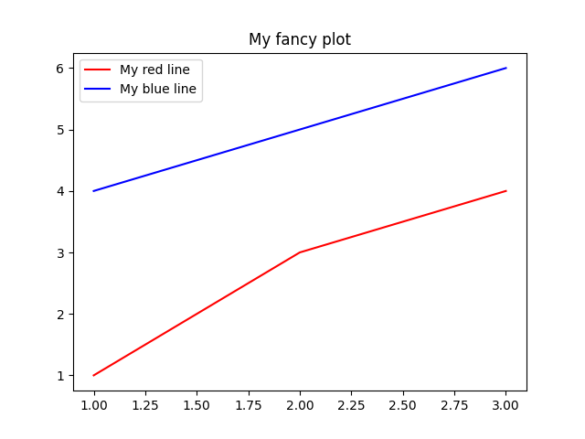

Note
Click here to download the full example code
Short Python Tutorial#
In this tutorial, we will introduce very briefly what is Python and how to use it.
But first…
What is PyMAPDL?#
PyMAPDL is the pythonic interface for Ansys MAPDL product.
What does this mean?
It means that you can call Ansys products (Solvers, Post processing tools, etc) using Python programming language.
What is Python?#
Python is a high-level programming language widely used and general-purpose. Python improves code readability compared to other languages and it is very suitable for people starting to code. Also, it is dynamically-typed (as opposed to static, which runs many actions during compilation) and garbage-collected (memory is managed automatically when a variable is no longer used).
Introduction to Python#
Storing variables.
mystring = "text"
myotherstring = "text"
myfloat = 2.2
myint = 2
mybool = True # ``True`` and ``False`` are reserved keywords. As well as ``for``, ``in``, ``as`` and some more.
There are functions such as print or help which can be called as:
print("Hello Madrid!") # You can call functions using parenthesis
help(print)
Hello Madrid!
Help on built-in function print in module builtins:
print(...)
print(value, ..., sep=' ', end='\n', file=sys.stdout, flush=False)
Prints the values to a stream, or to sys.stdout by default.
Optional keyword arguments:
file: a file-like object (stream); defaults to the current sys.stdout.
sep: string inserted between values, default a space.
end: string appended after the last value, default a newline.
flush: whether to forcibly flush the stream.
There are other more complex structures such as list, tuples, dicts, etc
1
qwer
This is a dict which does a mapping between its keys and values.
3
Control flow in Python#
You can do conditionals (if) as the following:
my_int = 2
if myint > 5:
print("My int is bigger than 5!")
elif myint > 2:
print("My int is bigger than 2!")
else:
print("Any other case")
if mybool:
print("Because 'mybool' is True, I'm showing you this.")
if mystring == myotherstring: # "text" == 'text'
print("Although we used different quotes, they are the same!")
Any other case
Because 'mybool' is True, I'm showing you this.
Although we used different quotes, they are the same!
Loops in python#
Loops in Python can be done as:
1
2
3
or
0
1
2
3
4
there is also ‘while’ loops
0
1
2
3
4
You can “break” loops using the keyword break
0 0
1 2
2 4
Exiting early!
Importing other libraries#
You can also import other libraries that expand Python functionalities by providing more data structures, functions and/or classes.
import os # for Operative system operations related
print(os.name) # OS name
posix
You can also import modules/functions from libraries
False
You can import a library giving it another name
import math as mm # Built in math library
print(mm.sqrt(2))
1.4142135623730951
Numpy and Matplotlib#
Some of the most used Python libraries are: Numpy and Matplotlib. The first one is for numerical calculations and the second is for plotting.
[2 4 6]
[1 2 3]
You can index elements using square brackets:
array([1, 4])
For plotting you can use matplotlib
You can do multiple lines at once.
Plotting a NACA airfoil#
“Those plots looks rather simple plots….”
Ok, let me show you:
Reference: https://en.wikipedia.org/wiki/NACA_airfoil#Equation_for_a_cambered_4-digit_NACA_airfoil
# First let define some helper functions.
def camber_line(x, m, p, c):
return np.where(
(x >= 0) & (x <= (c * p)),
m * (x / np.power(p, 2)) * (2.0 * p - (x / c)),
m * ((c - x) / np.power(1 - p, 2)) * (1.0 + (x / c) - 2.0 * p),
)
def dyc_over_dx(x, m, p, c):
return np.where(
(x >= 0) & (x <= (c * p)),
((2.0 * m) / np.power(p, 2)) * (p - x / c),
((2.0 * m) / np.power(1 - p, 2)) * (p - x / c),
)
def thickness(x, t, c):
term1 = 0.2969 * (np.sqrt(x / c))
term2 = -0.1260 * (x / c)
term3 = -0.3516 * np.power(x / c, 2)
term4 = 0.2843 * np.power(x / c, 3)
term5 = -0.1015 * np.power(x / c, 4)
return 5 * t * c * (term1 + term2 + term3 + term4 + term5)
def naca4(x, m, p, t, c=1):
dyc_dx = dyc_over_dx(x, m, p, c)
th = np.arctan(dyc_dx)
yt = thickness(x, t, c)
yc = camber_line(x, m, p, c)
return (
(x - yt * np.sin(th), yc + yt * np.cos(th)),
(x + yt * np.sin(th), yc - yt * np.cos(th)),
)
# NACA Parameters
# naca2412
m = 0.02
p = 0.4
t = 0.12
c = 1.0
x = np.linspace(0, 1, 200)
for item in naca4(x, m, p, t, c):
plt.plot(item[0], item[1], "b")
plt.plot(x, camber_line(x, m, p, c), "r")
plt.axis("equal")
_ = plt.xlim((-0.05, 1.05)) # Store dummy values as '_'.
# From: https://stackoverflow.com/questions/31815041/plotting-a-naca-4-series-airfoil
Cool stuff uh?
Brief Python classes concept#
What is a class?
A class is an object in a programming language which …. #TODO: TO BE FILLED.
In Python everything you declare is considered an object, and hence they have some methods. For example strings have:
['t', 'xt']
You can list the methods of an object using dir:
print(dir(mystring)) # yes, '__add__' is a string method!
['__add__', '__class__', '__contains__', '__delattr__', '__dir__', '__doc__', '__eq__', '__format__', '__ge__', '__getattribute__', '__getitem__', '__getnewargs__', '__gt__', '__hash__', '__init__', '__init_subclass__', '__iter__', '__le__', '__len__', '__lt__', '__mod__', '__mul__', '__ne__', '__new__', '__reduce__', '__reduce_ex__', '__repr__', '__rmod__', '__rmul__', '__setattr__', '__sizeof__', '__str__', '__subclasshook__', 'capitalize', 'casefold', 'center', 'count', 'encode', 'endswith', 'expandtabs', 'find', 'format', 'format_map', 'index', 'isalnum', 'isalpha', 'isascii', 'isdecimal', 'isdigit', 'isidentifier', 'islower', 'isnumeric', 'isprintable', 'isspace', 'istitle', 'isupper', 'join', 'ljust', 'lower', 'lstrip', 'maketrans', 'partition', 'replace', 'rfind', 'rindex', 'rjust', 'rpartition', 'rsplit', 'rstrip', 'split', 'splitlines', 'startswith', 'strip', 'swapcase', 'title', 'translate', 'upper', 'zfill']
You can create your own class and inherit from it.
PyMAPDL provides you a class which gives you access to all MAPDL commands and more.
Total running time of the script: ( 0 minutes 0.412 seconds)